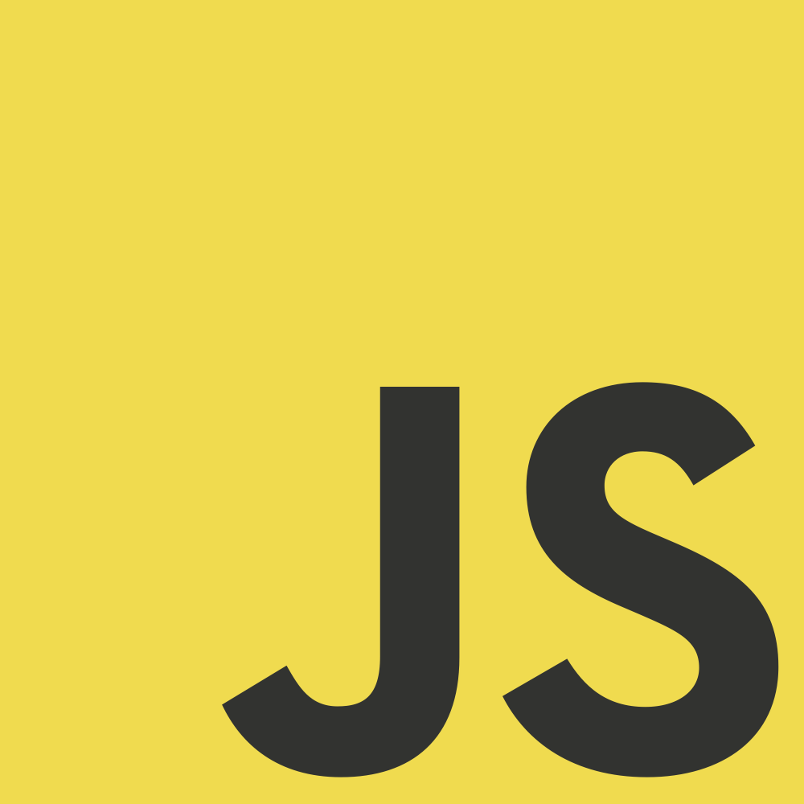

What is Web Development
Web development broadly refers to the tasks associated with developing websites for hosting via intranet or internet. The web development process includes web design, web content development, client-side/server-side scripting and network security configuration, among other tasks.
What can you do
Your job as a web developer is to present your clients' products and services to a wide audience by creating attractive and functional websites.
What type of languages you use
HTML, CSS, Java, Javascript, PHP, Perl among many others.